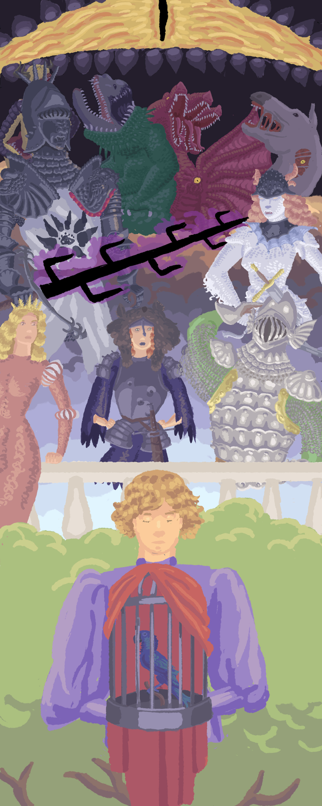
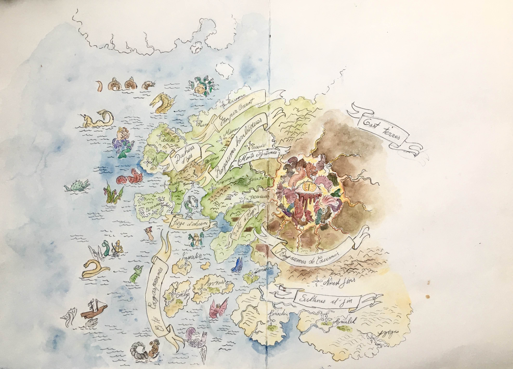
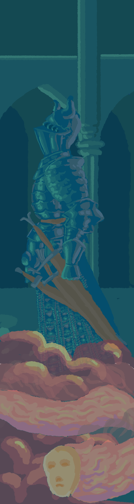
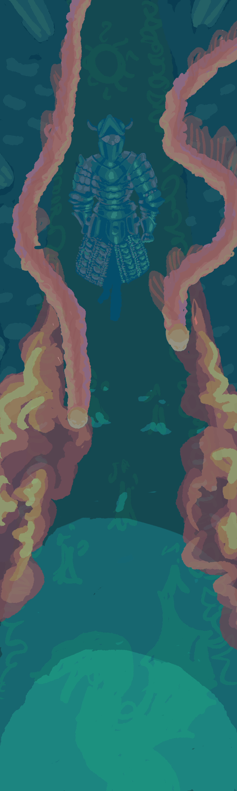
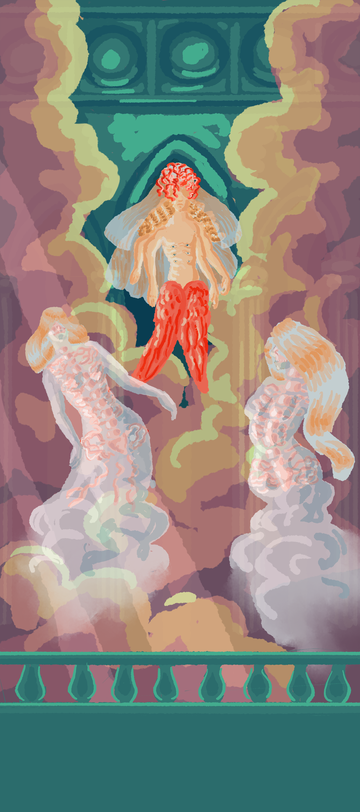
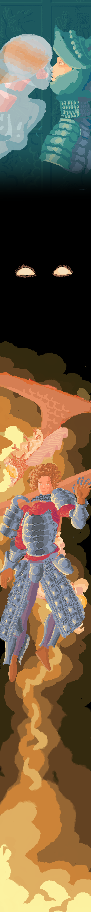

Neven
Ce projet est une expérimentation de narration graphique. Le but est de créer une forme de découpage immersif adapter aux format digital. Les scène fondes les une dans les autres créant un récit fluide en envoûtant.




"Guerriers du Neoheim" est un projet de jeu système de jeu de rôle unique. En plus des exploration de donjon proposer par les franchise classique Guerriers du Néosheim vous permettera de controller des miliers d'hommes dans des batailles épique avec un système ingénieux qui permet aux passionner de stratégie et aux joueur qui recherches des combat épique de trouver leur bonheur.

